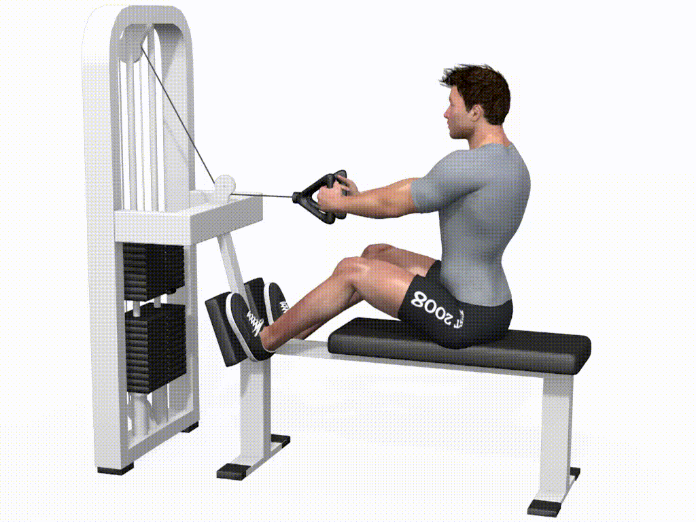
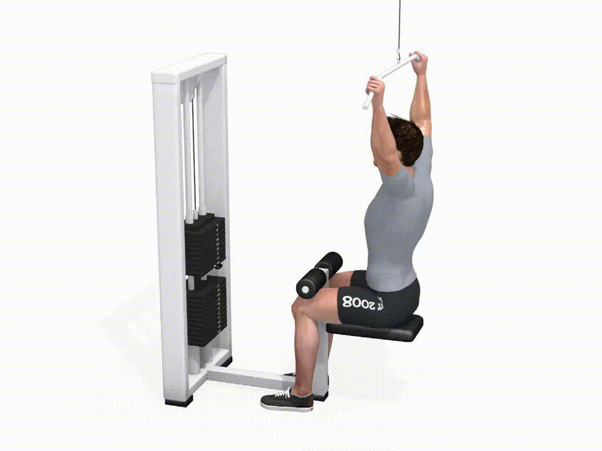
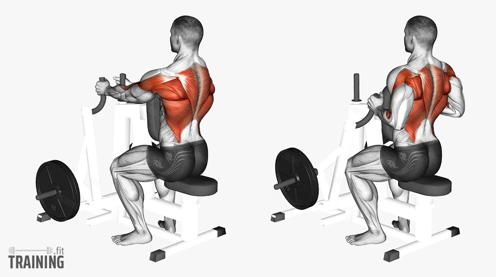
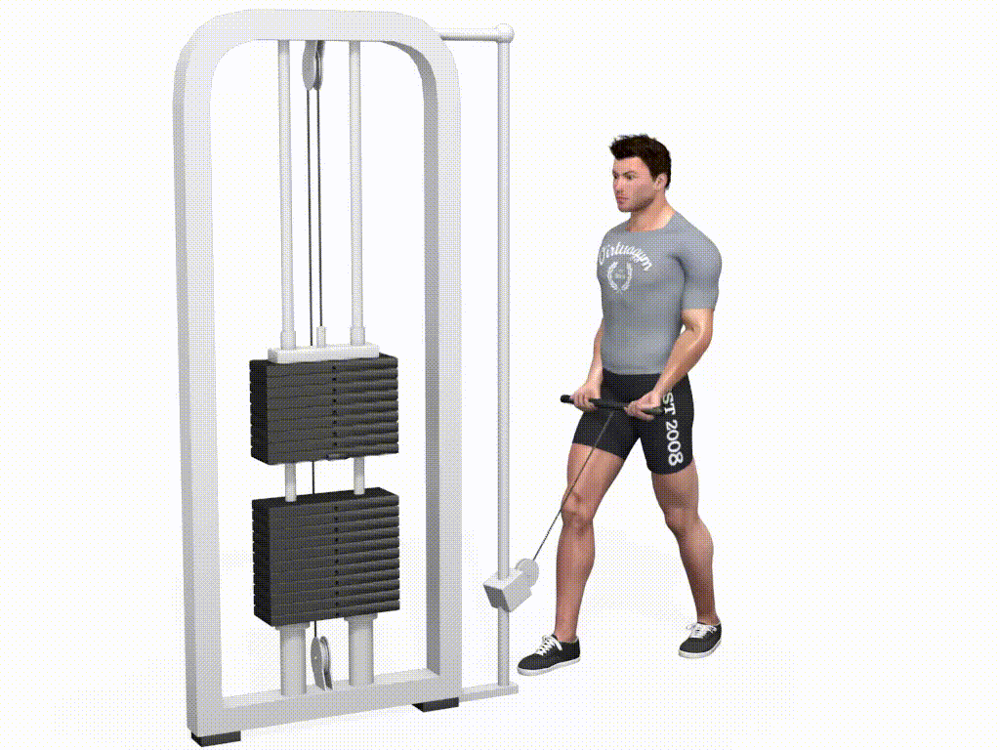
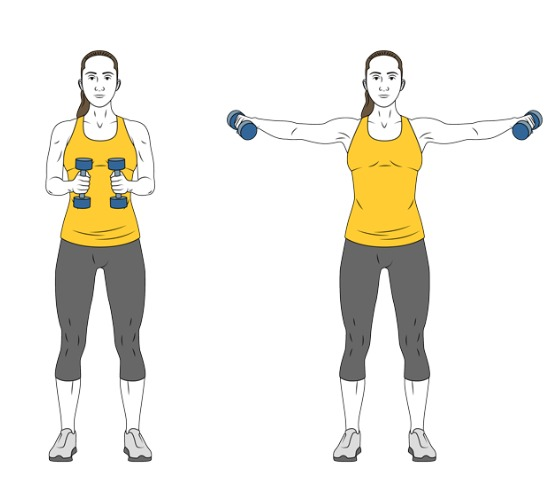

🔁 Haz 3 series de 10–12 repeticiones por ejercicio
⏱️ Descansa 60–90 segundos entre series
💡 Cómo se hace: Siéntate en la máquina con la espalda recta. Agarra el asa con ambas manos y tira hacia el abdomen manteniendo los codos pegados al cuerpo. Contrae la espalda al final y vuelve lento.
🎯 Músculos trabajados: dorsales, romboides.
💡 Cómo se hace: Sentado bajo la polea alta, agarra la barra con un agarre amplio. Baja la barra hasta el pecho, llevando los codos hacia abajo y atrás. Sube controlando.
🎯 Músculos trabajados: dorsales anchos, trapecio.
💡 Cómo se hace: Apoya el pecho en la almohadilla de la máquina. Con los brazos estirados, tira de las asas hacia ti juntando los omóplatos. Mantén la espalda recta.
🎯 Músculos trabajados: romboides, deltoides posteriores, dorsales.
💡 Cómo se hace: Coloca la polea abajo. Mirando hacia la máquina, agarra la barra con las palmas hacia arriba. Con los brazos en forma de “L”, lleva la barra hacia los hombros y baja lento.
🧠 Consejo: evita balanceos.
💡 Cómo se hace: De pie, con una mancuerna en cada mano. Brazos en “L” (codos pegados al torso), sube las mancuernas hacia los hombros y baja controlando.
🎯 Músculos trabajados: bíceps braquial.
💡 Cómo se hace: Mismo movimiento que el anterior, pero sujetando las mancuernas con los puños mirando hacia dentro (posición de martillo). Subes y bajas sin mover los codos.
🎯 Músculos trabajados: bíceps + antebrazos (braquiorradial).